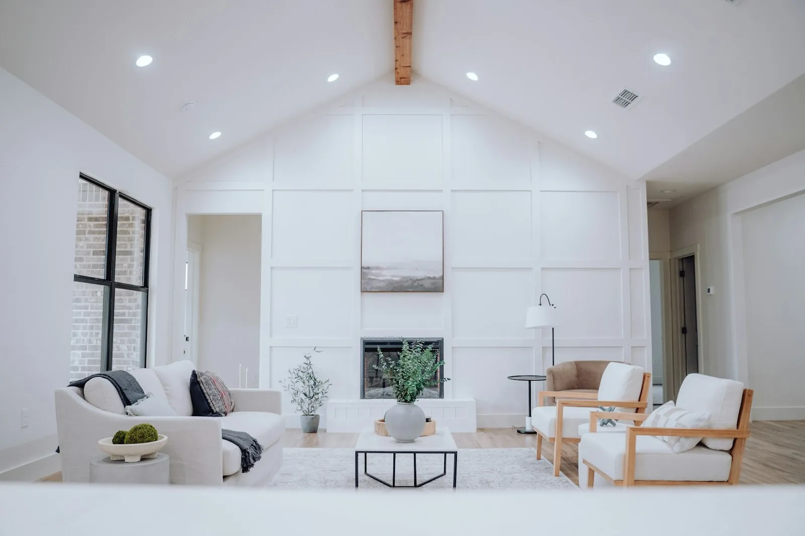
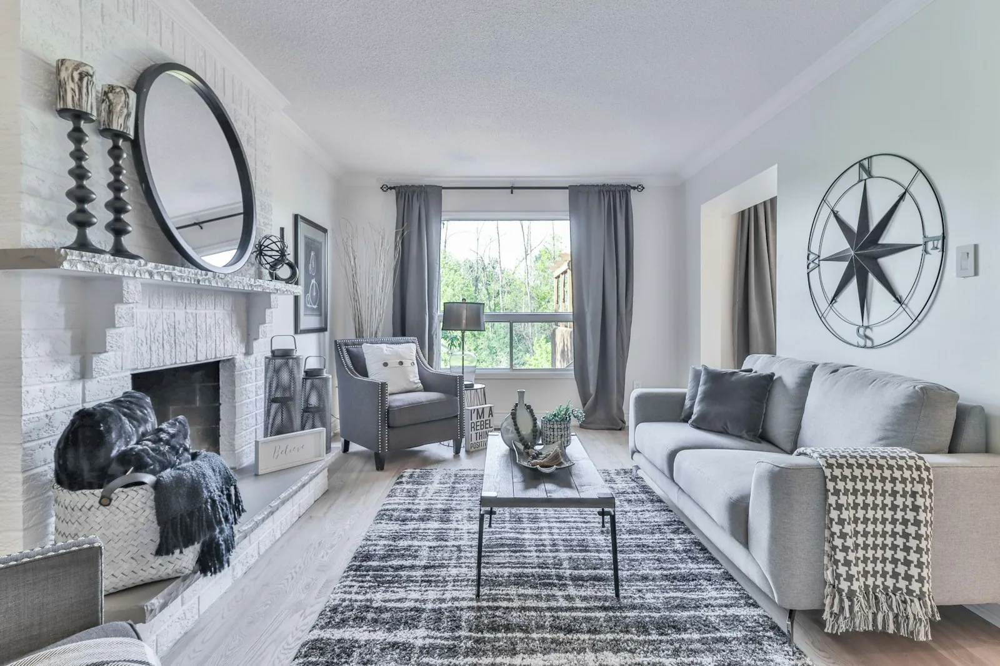
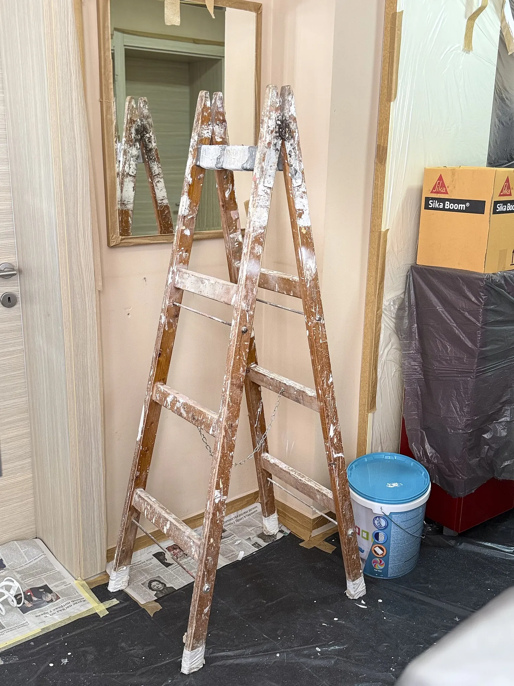

Why every old house has a floor lottery
From the 1910s through the 1970s, builders laid hardwood everywhere — under the carpet, the linoleum, even under the particleboard that replaced it in the 80s. Original old-growth oak, maple, and fir are denser, straighter-grained, and wider-planked than anything sold today. That's why "the floor lottery" is a thing: in most century homes, you're one carpet-pull away from the single best finish the house owns.
The two-minute check (no damage done)
- Find a corner. Closet corners are ideal — carpet is usually cut loose there, and nobody objects to a peek in a closet.
- Peel back one corner of the padding. If you see wood, check its condition: discolored stains that follow the wall = old moisture; black spots = pet or water damage — check the subfloor underneath for rot before celebrating.
- Check the wear layer. Look at the flooring edge at a doorway or heat register: original ¾" hardwood can typically be sanded 4–6 times. If you see ¾" of solid wood, you've won.
- Check for staples and glue. Carpet pad glue (yellow or black residue) is the common complication — it sands off but adds prep time and cost.
Do this at the showing, before the offer. A house with refinishable hardwoods under the carpet is worth negotiating up for — its floors are an asset, not a mystery.
What winning is worth (2025–26 numbers)
| Path | Typical cost, 1,800 sq ft | Result |
|---|---|---|
| Sand + hardwax oil (restore originals) | $3,500 – $6,000 | Old-growth character, 4–6 future sands |
| New engineered hardwood over the top | $14,000 – $22,000 | New look, 1–2 sands max, covers the asset |
| Refinish with stain + poly | $2,800 – $4,500 | Darkens and hides — fine, but hardwax oil is the restoration-first choice |
| Leave carpet, postpone | $0 now | Asset keeps hiding — but every year of pet traffic reduces the sandable layer |
The gap between row one and row two is $8,000–$16,000 — the floor lottery, won. That's the same order of magnitude as a full rewire, which is why the audit's character story treats floors as a first-class asset.
The sanding mistakes that destroy the win
- Renting a drum sander without training. A 36-grit drum sander removes 1/16" in seconds — hold it still for one moment and you've cut a groove that no finish hides. Practice on a closet, or hire the sanding.
- Sanding through the wear layer. If you hit nails, you've gone too far. Stop at first sight of the vertical grain profile.
- Water-popping everything "for richness." Water-popping is a stain technique, not a default — it can raise grain and trap moisture on old floors.
- Staining instead of finishing. Old-growth oak darkens beautifully with hardwax oil alone. Stain is a mask; oil is a reveal.
- Sanding water-damaged areas without replacing them. Softened, darkened wood near old leaks sands to a weak, blotchy patch. Fix the moisture, replace the damaged planks from a salvage stash, then sand.
Original floors are the one finish in a century home that genuinely cannot be bought again. Sand what's under the carpet before you buy anything new.— Chapter 05, The Style Guide
The restoration-first recipe
- Strip carpet, pad, staples — expect $250–$600 in disposal and prep if glued.
- Belt-sand with 36 → 60 → 80 grit (professional), or orbital-only for a lighter touch if the finish is mostly sound.
- Repair: replace damaged planks, fill gaps with oak filler tinted to match, re-seat loose boards with screws driven below the surface.
- Finish with hardwax oil (two coats) — buff between coats. Cost in materials: $300–$600 for 1,800 sq ft.
- Move furniture back after 48 hours; no rugs for two weeks while the oil cures.
The full recipe — including the gap-fill ratios and the tool list — is Deliverable 05 (Restore-First Style Guide) in the Kit, alongside the plaster, window, and trim equivalents.
Species by decade: what to expect under the carpet
The floor lottery pays out differently by era. Know what you are likely standing on before you pull the corner:
- 1890鈥?920: heart pine or oak, wide planks (5鈥? inches), often with a softer secondary species under the entry hall. High character, soft surface 鈥?plan a hard-oil finish and accept patina.
- 1920鈥?940: oak, standard widths (2录鈥?录 inches), frequently quarter-sawn in better houses. The classic winner: dense, stable, and refinishable for decades.
- 1940鈥?960: oak or maple in main rooms; fir or pine in bedrooms and halls. Maple is the sleeper find 鈥?hard, pale, and impossible to buy new at old-growth quality.
- 1960鈥?975: still hardwood under most carpet, but increasingly 戮-inch strip oak glued over the subfloor 鈥?check whether it is nailed (good) or floating on felt (still refinishable, just squeakier).
Whatever the species, the test is the same: 戮 of solid wood with a refinishable wear layer, in a room without a moisture history, is a win. The free audit includes the floor check.
The 72-hour rule after sanding
More floors are ruined in the week after sanding than in the sanding itself. The restoration-first recipe works only if the finishing window is protected:
- Hours 0–24: the freshly sanded floor is raw wood — bare feet only, no traffic beyond the work path, and every door to the room closed. Even a clean sock carries grit that embeds in open grain.
- Hours 24–48: the first hardwax oil coat is curing. Keep the room between 60–75°F and humidity below 60%; a humidifier running elsewhere in the house is fine, one in the room is not.
- Hours 48–72: second coat and buff. This is also the window to touch up gaps with matching filler — after 72 hours the filler cures and the touch-up becomes a patch.
- After 72 hours: light foot traffic only; no rugs, pet beds, or furniture pads for two full weeks while the oil finishes cross-linking. The survey owners who waited the two weeks reported zero re-coat touch-ups; the ones who rushed averaged two.
The cost of the discipline is one clear two-week calendar block — the 90-day sequence reserves it deliberately, and trying to compress it is how the floor lottery win becomes a refinish-again line item.
Board replacement: honesty over perfection
The floor lottery win can still arrive with gaps, water-stained boards, and the occasional cut line from an abandoned door. The restoration-first answer is honest patching, not perfection:
- Source the patch boards first. New-growth oak reads paler and tighter than old-growth; the fix is reclaimed boards from a salvage yard or a demolition dealer — same era, same width, same grain direction. Budget one to two boxes per 1,800 square feet for a typical floor.
- Cut to the joist, not to the stain. Water-damaged boards should be cut back to the nearest joist bay so both the cut ends and the patch board land on solid support. A patch that floats over a void creaks and telegraphs within a season.
- Hide the seam in the grain. Randomize the patch lengths (18–36 inches, never two patches on the same joist line), and let hardwax oil blend the patch into the floor over the first few weeks. The goal is a floor that looks lived-in, not a floor that looks repaired.
- Accept the character boards. One dark mineral streak or old staple line per room reads as history; sanding it out removes the very depth the lottery pays for. Leave two or three honest boards per room and the whole floor reads as original.
Honest patching costs about $3 per square foot in materials and one extra day — against $14–$22 per square foot for re-flooring the room, it is the difference between preserving the asset and erasing it.

Frequently asked questions
Pine floors (common pre-1930) are softer and scar easier, but they're still original fabric with old-growth character. Same restore-first approach, choose a harder finish (polyurethane or hardwax oil is fine), and accept the patina — it's the point.
Not necessarily — milk paint and even latex can be stripped with the right chemical and a scraper, especially if the previous owner painted over a sound finish. Test a corner with a paint stripper first to see what's under it; if it's hardwood in good shape, budget $1–$2 per sq ft extra for stripping.
Only with reclaimed/salvage oak — new-growth oak reads noticeably paler and tighter-grained. That's why the Kit's sourcing chapter lists salvage yards first for flooring patching: same era, same character, one board at a time.
If it's original under there, yes — sand it with the rest and let hardwax oil handle the kitchen. Old-growth oak shrugs off kitchens; it's been doing it for a century. See the restore-vs-gut guide for the surfaces-vs-systems rule that makes this call easy.
Yes, and it is a common phasing strategy 鈥?but sand an entire room in one pass (stop-start sanding shows as rings), and match the finish across phases. Hardwax oil touches up invisibly, which is one more reason it is the restore-first choice over film finishes.